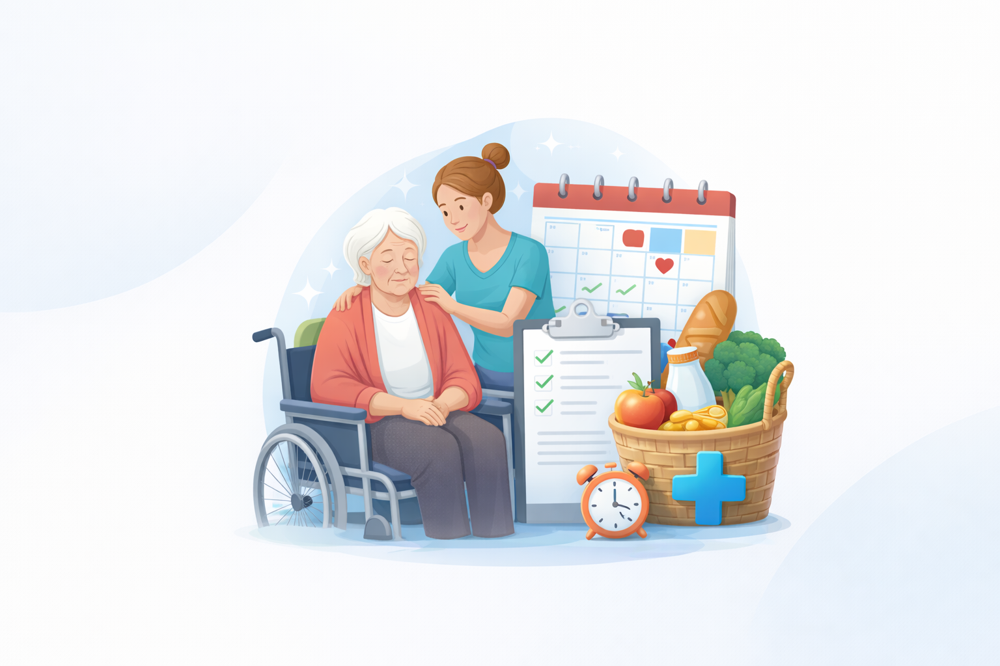
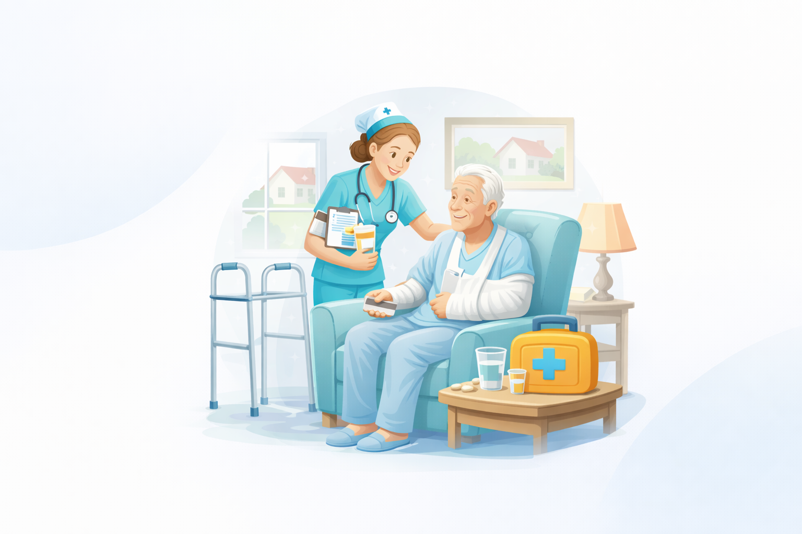

Pflegegrad-Startpaket
Für den sicheren Start in Antrag und Begutachtung - ohne Überforderung.
- Erstklärung und Prioritätenliste
- Unterlagencheck für den Antrag
- Vorbereitung auf die Begutachtung
Konkrete Hilfe bei Pflegegrad, Unterlagen, Versorgung nach Klinikaufenthalten und Entlastung im Alltag.
Ich unterstütze Sie bei genau den Punkten, die Familien am meisten belasten: Pflegegrad, Unterlagen, Übergänge nach Klinik oder Reha und alltagstaugliche Entlastung für Angehörige.
Für den sicheren Start in Antrag und Begutachtung - ohne Überforderung.

Struktur für Familien, wenn zu viele Aufgaben gleichzeitig anfallen.

Sichere Rückkehr in den Alltag nach Klinik oder Reha.
Sichere Begleitung bei Antrag, Begutachtung und Korrektur
Ich begleite Sie vom ersten Pflegegrad-Antrag bis zur finalen Entscheidung und bereite Sie gezielt auf die MD-Begutachtung vor.
Die richtigen Leistungen zur richtigen Zeit organisieren
Ich koordiniere medizinische, pflegerische und soziale Hilfen und unterstütze Sie bei Reha, Hilfsmitteln und Anträgen gegenüber Kostenträgern.
Praktische Unterstützung für ein sicheres und aktives Leben
Ich begleite ältere Menschen und Menschen mit Behinderung im Alltag, fördere Teilhabe und schaffe verlässliche Strukturen im gewohnten Umfeld.
Strukturiertes Vorgehen in sechs Phasen: von der Klärung bis zur Evaluation und Nachsorge.
Identifikation des Falls und Prüfung, ob die Voraussetzungen für ein Case Management erfüllt sind.
Systematische Analyse der Lebenssituation, Problemlagen, Ressourcen und des konkreten Unterstützungsbedarfs.
Gemeinsame Festlegung realistischer Ziele und Entwicklung eines konkreten Maßnahmenplans (Care Plan).
Umsetzung der geplanten Maßnahmen und aktive Koordination aller beteiligten Leistungserbringer.
Kontinuierliche Überprüfung der Wirksamkeit und bei Bedarf gezielte Anpassung des Maßnahmenplans.
Bewertung der erreichten Ergebnisse, geordneter Fallabschluss oder Übergang in eine passende Nachsorge.